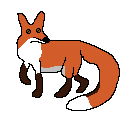
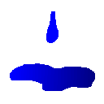
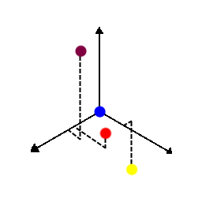
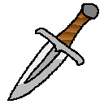

Eremoran Language
Eremoran is the language spoken in Eremor.
Proto-Eremo-Numoran
The following table is constructed for Proto-Eremo-Numoran:
| Labiovelar |
Alveolar |
Palatal |
Velar |
| *m |
*n |
|
| *b |
*t *d |
*tʃ |
*k *g |
| *ɸ *β |
*s |
*ʃ |
*x |
|
*l *r |
|
There was likely no /p/ in Proto-Eremo-Numoran: it is totally absent in Numoran and many of the Eremoran words containing /p/ are known loans.
The following are known sound changes, arranged roughly from oldest to newest.
From Proto-Eremo-Numoran to Old Eremoran:
- /x[e/ɛ]/ > /a/
- /x/ > /k/
- /f s/ > /h/ word-initially
- /s ɸ/ > /z β/ and /ss ɸɸ/ > /s ɸ/.
- /ɸ/ > /f/.
- /β/ > /b/.
- /i/ > /j/ between a consonant and a vowel.
- /sj zj tj dj/ > /ʃ ʒ tʃ dʒ/.
- /ʃ ʒ tʃ dʒ/ > /s z ts dz/.
- Unstressed vowels reduced to schwa.
From Old Eremoran to Eremoran (ie. these sound changes were recorded):
- /ts/ > /s/.
- /h/ > /Ø/.
- /r/ > /ʀ/.
Comparison between Proto-Eremo-Numoran, Eremoran, and Numoran:
| English |
Eremoran |
Numoran |
Proto-Eremo-Numoran |
| hammer |
/ˈbɔʕ.n̩t/ |
/ˈwe.ʎent/ |
/ˈvɔ.lɛnt/ |
| health |
/ˈɛn.lom/ |
/ˈsjen.lon/ |
/ˈsɛn.lom/ |
| knowledge |
/ˈf̩ˈfe.km̩/ |
/afˈfe.kwen/ |
/afˈfe.kɔm/ |
| person |
/mɔħ/ |
/mweɾ/ |
/mɔr/ |
| red |
/ʀ̩ˈʀɛ.ʊ/ |
/eˈɾjew/ |
/ɛˈrɛ.u/ |
| sight |
/s̩ˈu.ʀm̩/ |
/ˈsjaw.ɾɔn/ |
/si.aˈu.rɔm/ |
| that |
/ɔ/ |
/swe/ |
/sɔ/ |
Phonology
| Labiovelar |
Alveolar |
Velar |
Uvular |
| m |
n |
|
| p b |
t d |
k g |
|
| f |
s z |
|
|
l |
|
ʀ |
 |
 |
The primary pronounciation of the rhotic in contemporary Eremoran. |
The usage of /ħ/. |
The following remarks apply to all dialects:
- Stress is on the penult.
- /ə/ + non-schwa vowel = non-schwa vowel.
- /l/ is /ʕ/ intervocallically and word-finally.
The following remarks apply to the capital dialect, the focus of this writing, but not necessarily others:
- /ʀ/ is /ħ/ after /a ɔ/ except before front vowels.
- Voiced plosives /b d g/ have fricatives as intervocalic allophones /β ð ɣ/.
- /h/ is silent for most although there are some still pronouncing it /h ~ ʔ/, primarily in rural areas west of Deftei (Bend-Highbrook Dialect) and those in the upper lake.
The following remarks apply to the Bend-Highbrook dialect:
- The Bend-Highbrook dialect is the sole dialect to retain the archaic masculine-feminine distinction.
Other dialects use the old masculine as the human noun class.
The feminine was formed like the masculine -r, and was -rre.
By the time of the ending loss, the only audible difference was stress shift and the length of the rhotic, so it is unsurprising it fell into disuse.
Some modern scribes still observe the distinction in writing, but is widely viewed as an archaicism and the practice is quickly vaporizing.
- Some of the older residents remember a time when the eldest residents still used alveolar /r/, so the transition to uvular /ʁ/ there was relatively recent.
Transliteration Notes (for us humans)
In positions where the vowel is always unstressed, even in compounds, 'a' is used.
/h/ is silent for most speakers.
Grammar
- Adjectives end in -u- + noun ending, except ho, id(a) and ko, which just has the ending.
- Verbs end in -z. They do not conjugate; tenses and such are formed with special auxillary verbs.
- -êr = en. -er, la. -ator
- -om = verb -> noun suffix
- -lk = adjective -> adverb suffix
- -(i)su = -like, or -ish, noun -> adj.
- u- is a non-productive negative prefix, eg. uid "not" from *u- "not" + id "one".
-
Five noun classes:
- Human - (-r)
- Animate - (-k)
- Neuter 1 (Things that are harvested/broken from their source, used as tools...) - (-t)
- Neuter 2 (Other tangibles, the 'default' class) - (-Ø)
- Intangible - (-m)
Note that there are occasional exceptions to this rule, especially in proper nouns.
Vocab
Important Sets
One through ten:
- id
- nasu
- kumku
- babzu
- hanu
- elmnu
- glimu
- triksu
- talsu
- nasanu
Full List
- abakt
- Etymology: Proto-Eremo-Numoran *abakt 'board'
- n., 3rd
-
- board, plank
- table
- tablet, map, document
- afêkom
- Etymology: afêkz + -om
- n., 5th
-
- knowledge
- afêkz
- Etymology: Proto-Eremo-Numoran *affêks 'know'
- v.
-
- know
- afkaz
- Etymology: Proto-Eremo-Numoran *afkas 'go'
- v.
-
- go
- alika

- Etymology: Proto-Eremo-Numoran *alika 'sand'
- n., 4th
-
- sand
- desert
- beach
- amzralz
- Etymology: Proto-Eremo-Numoran *amsrals 'count'
- v.
-
- count
- arama

- Etymology: Proto-Eremo-Numoran *xere 'fire' + *ma 'bearer, holder, container'. Compare Modern Eremoran ardo 'fire' and mat 'house'.
- n., 4th
-
- native copper
- tetrahedrite
- malachite
- aramat
- Etymology: arama + -t
- n., 3rd
-
- copper
- ardo

- Etymology: Proto-Eremo-Numoran *xeredo 'flame', diminutive of *xere 'fire', from *x 'living; flickering(?)' + *ereu 'red'
- n., 4th
-
- (wild)fire
- ardzin

- Etymology: Proto-Eremo-Numoran *xeredo 'flame' + *in '???'
- n., 4th
-
- native silver
- ardzint
- Etymology: ardzin + -t
- n., 3rd
-
- silver
- asmarz
- Etymology: Proto-Eremo-Numoran *assamars 'relax'
- v.
-
- relax
- babzu
- Etymology: Proto-Eremo-Numoran *babsu 'four'
- adj.
-
- four
- bartonk
- 
- Etymology: Proto-Eremo-Numoran *bartonx 'fox'
- n., 2nd
-
- fox
- barz
- Etymology: Proto-Eremo-Numoran *bars 'bind'
- v.
-
- bind
- batú
- Etymology: Proto-Eremo-Numoran *batú 'also'
- adv.
-
- also, too
- baz
- Etymology: Proto-Eremo-Numoran *vas 'lead'
- v.
-
- lead
- bazêr

- Etymology: baz + -êr
- n., 1st
-
- leader, ruler
- emperor, king
- be
- Etymology: Proto-Eremo-Numoran *be 'or'
- conj.
-
- or, either
- berbz
- Etymology: Proto-Eremo-Numoran *berbs 'leave'
- v.
-
- leave
- bolent
- Etymology: Proto-Eremo-Numoran *bolent 'hammer'
- n., 3rd
-
- hammer
- da
- Etymology: Proto-Eremo-Numoran *da 'earth'
- n., 4th
-
- earth, dirt, ground, soil
- clay
- land, territory
- Oneia
- danôak
- Etymology: Proto-Eremo-Numoran *da 'earth' + *nôax '[Some kind of animal]'
- n., 2nd
-
- bug, insect
- daz
- Etymology: Proto-Eremo-Numoran *das 'leave'
- v.
-
- leave
- dô
- Etymology: Proto-Eremo-Numoran *dô 'in'
- postp.
-
- in
- dou
- Etymology: Proto-Eremo-Numoran *dou 'few'
- adj.
-
- few
- less
- edzam
- Etymology: Proto-Eremo-Numoran *ediam 'part'
- n., 5th
-
- part
- section, segment, chapter
- sector, district
- a unit of measurement equal to one-quarter of one labnim (~42.6 mm)
- êkar
- Etymology: Proto-Eremo-Numoran *êkar 'man'
- n., 1st
-
- man
- husband
- elau
- Etymology: Proto-Eremo-Numoran *elau 'little'
- adj.
-
- little, small, tiny
- elmnu
- Etymology: Proto-Eremo-Numoran *elmnu 'six'
- adj.
-
- six
- empra
- Etymology: Loan from Pre-Eremoran
- n., 4th
-
- lemon
- endou
- Etymology: Proto-Eremo-Numoran *endou 'high'
- adj.
-
- high, up
- tall
- ensfu
- Etymology: Proto-Eremo-Numoran *ensfu 'lewd'
- adj.
-
- lewd
- ereu
- Etymology: Proto-Eremo-Numoran *ereu 'red'. Related to ardo 'fire'.
- adj.
-
- red
- glimu
- Etymology: Proto-Eremo-Numoran *glimu 'seven'
- adj.
-
- seven
- hanu
- Etymology: Proto-Eremo-Numoran *fanu 'hand'
- adj.
-
- five
- henlôm
- Etymology: Proto-Eremo-Numoran *senlôm 'health'
- n., 5th
-
- health
- truth
- henlôsu
- Etymology: henlôu 'health' + -su
- adj.
-
- healthy
- true, real
- ho
- Etymology: Proto-Eremo-Numoran *so 'that'
- adj.
-
- that, those
- hod
- Etymology: ho + dô
- conj.
-
- if
- id
- Etymology: Proto-Eremo-Numoran *id 'one'
- adj.
-
- one
- idu
- Etymology: id + -u
- adj.
-
- first
- idulk
- Etymology: id + -(u)lk
- adj., adv.
-
- any
- kagrem
- Etymology: Proto-Eremo-Numoran *kagrem 'tone'
- n., 5th
-
- music
- tonality
- kalz
- Etymology: Proto-Eremo-Numoran *kalz 'ask'
- v.
-
- ask
- karm
- Etymology: Proto-Eremo-Numoran *xarm 'war'
- n., 5th
-
- war
- kek
- Etymology: Proto-Eremo-Numoran *xex 'god'
- n., 2nd
-
- god
- powerful person; aristocrat; noble
- skilled person; expert
- kinê

- Etymology: Proto-Eremo-Numoran *kinê 'reed'
- n., 4th
-
- reed
- cane
- kink
- Etymology: Proto-Eremo-Numoran *kinx 'weasel'
- n., 2nd
-
- weasel
- kitkir
- Etymology: Proto-Eremo-Numoran *kitkir 'friend'
- n., 1st
-
- friend
- kotaz
- Etymology: Proto-Eremo-Numoran *kotas 'shoot'
- v.
-
- launch
- shoot
- kuidam
- Etymology: Proto-Eremo-Numoran *kuidam 'end'
- n., 5th
-
- end
- kumku
- Etymology: Proto-Eremo-Numoran *kumku 'three'
- adj.
-
- three
- ko
- Etymology: Proto-Eremo-Numoran *ko 'this'
- adj.
-
- this, these
- kôbensu
- Etymology: kôbénk + -su.
- n.
-
- (literally) murine
- cute
- shy
- kôbénk
- Etymology: Pre-Eremoran loan
- n.
-
- mouse
- rat
- Any species of the suborder Myomorpha
- kopz
- Etymology: Pre-Eremoran loan
- v.
-
- love
- ku
- Etymology: Proto-Eremo-Numoran *ku 'and'
- conj., postp.
-
- and, both
- with
- labnit
- Etymology: Proto-Eremo-Numoran *labnit 'brick'
- n., 3rd
-
- brick
- landan
- Etymology: Proto-Eremo-Numoran *landan '???'
- n., 4th
-
- undergarment
- lolz
- Etymology: Proto-Eremo-Numoran *lols 'laugh'
- v.
-
- laugh
- lusik
- Etymology: Proto-Eremo-Numoran *lussix 'wolf'
- n., 2nd
-
- wolf
- maiusu
- Etymology: Proto-Eremo-Numoran *masiusiu 'stunned', from *mas 'contain' + *siusiu 'stunned, dazed', reduplicated from *siu 'bright'.
- adj.
-
- silly
- markla
- Etymology: Proto-Eremo-Numoran *markla '???'
- n., 4th
-
- thing
- mastúrk
- Etymology: Proto-Eremo-Numoran *mas 'contain' + *túr '???' + *-x [Animate suffix]
- n., 2nd
-
- rabbit
- mat
- Etymology: Proto-Eremo-Numoran *ma 'bearer, holder, container' + *-t (suffix for tools)
- n., 3rd
-
- home
- house
- mim
- Etymology: Proto-Eremo-Numoran *mim 'idea'
- n., 5th
-
- idea
- thought
- mor

- Etymology: Proto-Eremo-Numoran *mor 'person' from Proto-Muran *mur 'person'
- n., 1st
-
- guy, person
- people
- mu
- 
- Etymology: Proto-Eremo-Numoran *mu 'water'
- n., 4th
-
- water
- body of water
- liquid, juice, fluid
- mut
- Etymology: mu + -t
- n., 3rd
-
- extract, essential oil, stock
- muu
- Etymology: mu + -u
- adj.
-
- wet
- nasanu
- Etymology: nasu + hanu
- adj.
-
- ten
- nask
- Etymology: Proto-Eremo-Numoran *nassax 'carnivoran'
- n., 2nd
-
- carnivoran
- Note: this word does not refer to carnivores in general, only carnivorans.
- nasu
- Etymology: Proto-Eremo-Numoran *nassu 'carnivoran'
- adj.
-
- two
- nu
- Etymology: Proto-Eremo-Numoran *nu 'low'
- adj.
-
- low
- short
- nubu
- Etymology: Proto-Eremo-Numoran *nubu 'new'
- adj.
-
- new
- okar
- Etymology: Proto-Eremo-Numoran *okar 'woman'
- n., 1st
-
- woman
- wife
- ôkarinu
- Etymology: Pre-Eremoran loan
- adj.
-
- crazy
- parz
- Etymology: Pre-Eremoran loan
- v.
-
- chop, cut, slice
- indent
- parzom
- Etymology: parz + -om
- n., 5th
-
- chop, cut, slice
- indentation, notch
- purru
- Etymology: Pre-Eremoran.
- adj.
-
- costly, expensive, valuable
- dear, important
- raz
- Etymology: Proto-Eremo-Numoran *ras 'paint'
- v.
-
- paint
- ril
- Etymology: Proto-Eremo-Numoran *ril 'sun'
- n., 4th
-
- sun
- day, sol (unit of time)
- daytime
- rilu
- Etymology: ril + -u
- adj.
-
- bright
- rô
- Etymology: Proto-Eremo-Numoran *rô 'tongue'
- n., 4th
-
- tongue
- rôm
- Etymology: rô + -m
- n., 5th
-
- speech
- language
- saurom
- Etymology: saurz + -om
- n., 5th
-
- sight, vision
- sauroma

- Etymology: saurom + -a
- n., 4th
-
- eye
- saurz
- Etymology: Proto-Eremo-Numoran *siu 'bright' + *aurz '???'
- v.
-
- see
- administrate
- sazam
- Etymology: Appears to be Proto-Eremo-Numoran *siu 'bright' + *asa '???' + *-m (Intangible suffix)
- n., 5th
-
- awe, fear, shock
- se
- Etymology: Proto-Eremo-Numoran *sie 'grain'
- n., 4th
-
- grain
- a unit of measurement equal to one-fifteenth of one edzam (~2.84 mm)
- sesu
- Etymology: Proto-Eremo-Numoran *sietiu 'hundred'
- adj.
-
- hundred
- sipam
- Etymology: Pre-Eremoran Loan
- n., 5th
-
- relationship
- siu
- Etymology: siz + -u
- adj.
-
- white
- shining
- siz
- Etymology: Proto-Eremo-Numoran *sis 'shine'
- v.
-
- shine
- skuiku
- Etymology: Proto-Eremo-Numoran *skuixu 'young', from *skuix 'offspring' + *-u [Adjectival suffix].
- adj.
-
- young
- spart
- Etymology: Pre-Eremoran.
- n., 3rd
-
- base, foundation
- sparu
- Etymology: spart + -u
- adj.
-
- basic
- stanu
- Etymology: Proto-Eremo-Numoran *stanu 'tin'
- n., 4th
-
- tin ore
- stanut
- Etymology: stanu + -t
- n., 3rd
-
- tin
- a coin made of tin
- talire

- Etymology: Proto-Eremo-Numoran *talire 'tree'
- n., 4th
-
- tree
- wood
- talsu
- Etymology: Proto-Eremo-Numoran *tálossu 'nine'
- adj.
-
- nine
- temz
- Etymology: Proto-Eremo-Numoran *tems 'defend'
- v.
-
- defend
- tiu
- Etymology: Pre-Eremoran
- adj.
-
- far, distant
- remote
- triksu
- Etymology: Proto-Eremo-Numoran *tríkassu 'eight'
- adj.
-
- eight
- tum
- 
- Etymology: Proto-Eremo-Numoran *tum 'sky'
- n., 5th
-
- sky
- set of objects visible overhead from a reference point
- ube
- Etymology: u- + be
- adv.
-
- nor, neither
- udou
- Etymology: u- + dou
- adv.
-
- big, great, large
- many, much
- more
- uid
- Etymology: u- + id
- adv.
-
- not
- uidulk
- Etymology: u- + idulk
- adj., adv.
-
- no, none
- uhod
- Etymology: u- + hod
- conj.
-
- unless
- uku
- Etymology: u- + ku
- postp.
-
- without
- ukuzestiu
- Etymology: uku- + zestiu
- adj.
-
- straight
- flat
- ulu
- Etymology: Proto-Eremo-Numoran *ulu 'blue'
- adj.
-
- blue
- ur
- Etymology: Proto-Eremo-Numoran *ur 'so'
- adv.
-
- so
- urist
- 
- Etymology: Proto-Eremo-Numoran *úrissat 'dagger'
- n., 3rd
-
- dagger
- zestim
- Etymology: Proto-Eremo-Numoran *séssatim 'angle'
- n., 5th
-
- angle
- bend
- zestiu
- Etymology: zestim + -u
- adj.
-
- angled
- bent
- zurgu
- Etymology: Proto-Eremo-Numoran *surgu 'bad'
- adj.
-
- bad
- evil